Dev GUI User’s Guide
The Unify Framework Developer GUI is a Web service that runs on the Unify gateway. It provides a graphical interface to operate the various features of the Unify gateway, such as network management, smartstart, multicast, and so on.
Access Developer GUI
The developer GUI (Dev GUI) can be accessed via any browser that can reach the Unify gateway over TCP/IP. Enter the hostname or IP address of the target running Unify and port 3080, which is the default port for Dev GUI. This process is shown in the image below where the hostname of a Raspberry is raspberrypi.local:
In addition to port 3080, the Dev GUI also depends on port 1337, which has to be accessible on the target running the Unify.
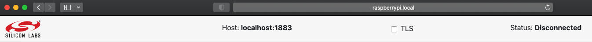
After entering the URL, you should see this front page:

Connecting the Developer GUI
Click connect in the top bar to start operating the Unify. Because of the modular nature of the developer GUI, you can connect it to other Unify’s. In most cases, you want to connect to the actual Unify that the developer UI is running on, therefore leaving it on localhost.
After clicking connect, check that the status says Connected and, after this, the page will still be blank. Then, click on the navigation bar on the left saying Nodes. At that point, the page should look like this:
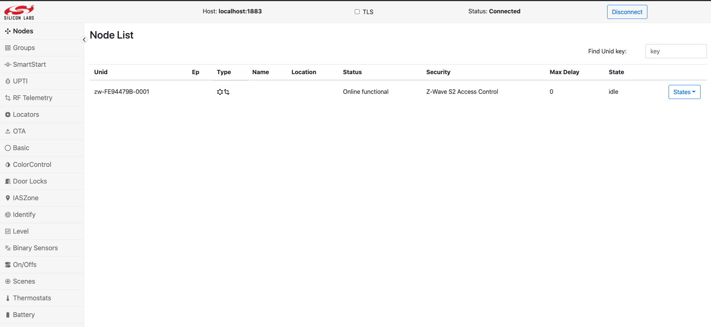
Node Inclusion
After connecting you should be able to see the discovered protocol controllers (PC) in the nodes list, as shown in the image above. You can do a normal node inclusion by pressing Add in the dropdown, on the right hand side of the row for the PC. This will set the PC in inclusion mode. After activating inclusion mode on the end device, a secure inclusion window may pop up depending on the security capabilities of the device:

For secure inclusion, input the first five digits of the DSK key. For unsecure inclusion, click Reject. Following is an example of a nodelist, where different security schemes are displayed:

SmartStart List
The SmartStart list enables including devices easily. A page of the SmartStart list enables to add and edit Device Specific Keys (DSK). When a device starts up or resets, it will automatically get included. A SmartStart entry and inclusion may look like this:
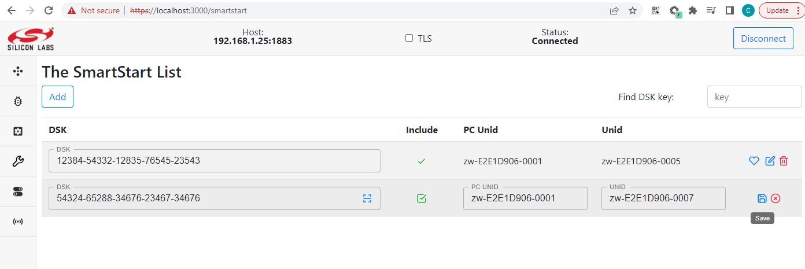
After filling in the DSK key and checking include, click save. If the Unify UPVL is running, it will be saved to the SmartStart list.
Using SmartStart with different PHYs
To make use of the SmartStart functionality, it is required to find out the Device Specific Key (DSK) of a device. There is no standard way to identify the DSK accross technologies, so this section describe how to do it for a few protocols.
Z-Wave DSKs
The Z-Wave DSK is printed either on the device, on the product packaging or a leaflet part of the box.
The DSK for a Z-Wave device is composed of 8 groups of 5 digits, for example
01421-38707-17446-23033-49713-08065-04470-59259.
On a label, if only 5 digits are displayed, they represent the first group
of the DSK. (01421 from the example above).
If using Simplicity Studio,
the DSK of a Z-Wave module can be accessed right-clicking on an adapter,
selecting Device Configuration. Navigate to the Z-Wave Device Settings tab.
The QR Code and DSK will be displayed in the window.
If a device shows a QR Code, it is possible to extract the DSK by scanning the QR Code. Use a QR Code scanning application and retrieve the data from the code. Z-Wave QR Code are encoded as a string of digits. For example:
9001165290030142138707174462303349713080650447059259001001793030790220000000000400003025780803003
Use the Z-Wave Alliance QR Code decoding tool to parse the digits and show what they represent. If you do not have access, you can request it at the Z-Wave Alliance member portal. Using the example from above, it will parse and display all information contained in the QR Code digits:
~/qr_code_tool> python3 decoder.py 9001165290030142138707174462303349713080650447059259001001793030790220000000000400003025780803003
╒══════════════════════════╤════════╤═════════╤═══════════════════════════════════════════════════════════════╕
│ Label │ Size │ Value │ Encoding │
╞══════════════════════════╪════════╪═════════╪═══════════════════════════════════════════════════════════════╡
│ Lead-In │ 2 │ 90 │ Lead-In char: 'Z' (MUST be 'Z') │
├──────────────────────────┼────────┼─────────┼───────────────────────────────────────────────────────────────┤
│ Version │ 2 │ 01 │ SmartStart QR Code Version: 1 │
├──────────────────────────┼────────┼─────────┼───────────────────────────────────────────────────────────────┤
│ Checksum │ 5 │ 16529 │ Checksum: 0x4091 │
│ │ │ │ Computed value: 0x4091 │
├──────────────────────────┼────────┼─────────┼───────────────────────────────────────────────────────────────┤
│ Requested Keys │ 3 │ 003 │ Requested S2 Keys: 0x003 │
│ │ │ │ Unauthenticated: 1 │
│ │ │ │ Authenticated: 1 │
│ │ │ │ Access Control: 0 │
│ │ │ │ Security 0 Network: 0 │
├──────────────────────────┼────────┼─────────┼───────────────────────────────────────────────────────────────┤
│ DSK │ 40 │ 01421 │ DSK: 01421-38707-17446-23033-49713-08065-04470-59259 │
│ │ │ 38707 │ │
│ │ │ 17446 │ │
│ │ │ 23033 │ │
│ │ │ 49713 │ │
│ │ │ 08065 │ │
│ │ │ 04470 │ │
│ │ │ 59259 │ │
├──────────────────────────┼────────┼─────────┼───────────────────────────────────────────────────────────────┤
│ ProductType (00) │ 10 │ 01793 │ Z-Wave Device Type: 0x0701 │
│ │ │ 03079 │ GENERIC_TYPE_SENSOR_NOTIFICATION (0x07) │
│ │ │ │ SPECIFIC_TYPE_NOTIFICATION_SENSOR (0x01) │
│ │ │ │ Z-Wave Installer Icon Type: 0x0C07 │
│ │ │ │ ICON_TYPE_SPECIFIC_SENSOR_NOTIFICATION_HOME_SECURITY (0x0C07) │
├──────────────────────────┼────────┼─────────┼───────────────────────────────────────────────────────────────┤
│ ProductId (02) │ 20 │ 00000 │ Z-Wave Manufacturer ID: Z-Wave (0x0000) │
│ │ │ 00004 │ Z-Wave Product Type: 00004 (0x0004) │
│ │ │ 00003 │ Z-Wave Product ID: 00003 (0x0003) │
│ │ │ 02578 │ Z-Wave Application Version: 02578 (0x0A12) │
├──────────────────────────┼────────┼─────────┼───────────────────────────────────────────────────────────────┤
│ Supported protocols (08) │ 03 │ 003 │ Z-Wave is supported: 1 │
│ │ │ │ Z-Wave Long Range is supported: 1 │
╘══════════════════════════╧════════╧═════════╧═══════════════════════════════════════════════════════════════╛
Add the DSK value in the SmartStart List from the DevGUI. The ZPC will subsequently include the node whenever it requests inclusion. Note that nodes already part of a network will need to be excluded or reset before they will seek inclusion in a new network.
BLE DSKs
There is currently no support for BLE DSKs in the SmartStart List.
Clusters
The following are the currently (2022-02-09) supported clusters of the Dev GUI:
On/Off switch
Binary sensor
Door lock
Thermostat
Color Control
Level Control
Identify
Name and Location
Scenes
Locator and Position Estimation
Basic
IASZone
Power Configuration
On/Off Switch
After inclusion of an On/Off switch and navigating to the switches page, the page will look something like this:
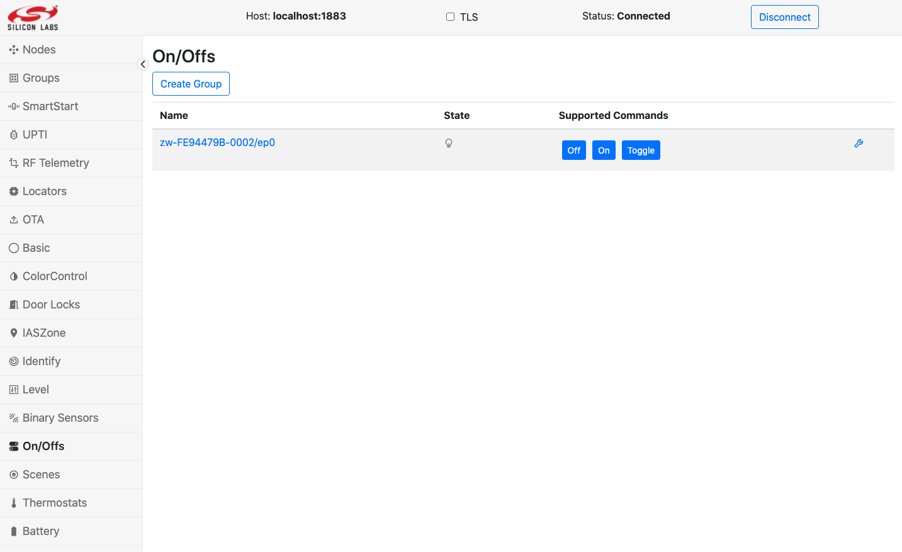
This can control an On/Off switch.
Binary Sensor
After including a Binary sensor, a page will look like this:
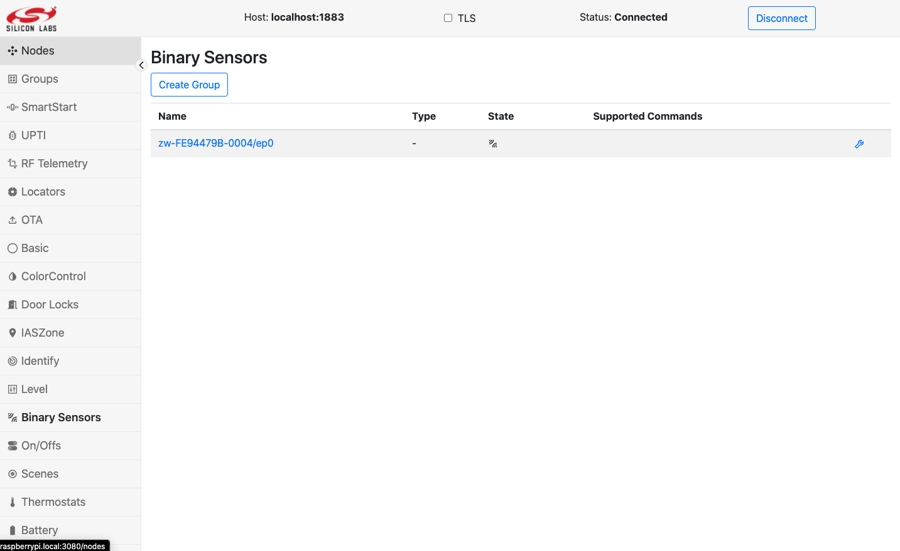
Door Lock
The door lock requires secure inclusion to work. The page will look like this:
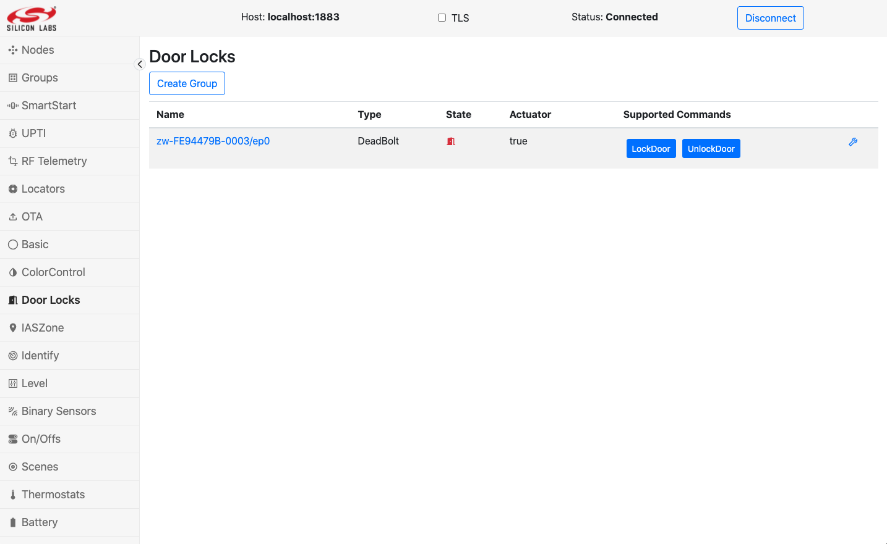
When unlocking or locking the door lock, a pop up will ask for a pin to the door lock:

Thermostat
The thermostat can change mode and change set point temperatures.
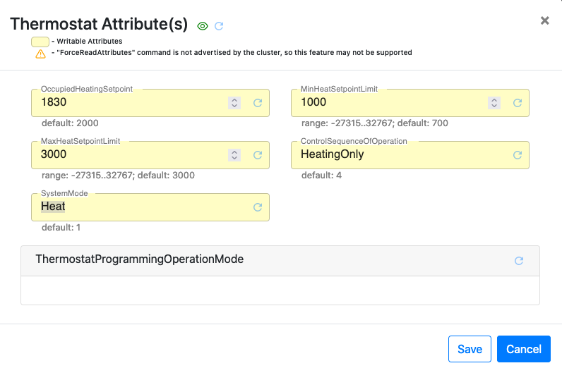
Groups
The Groups pane allows the user to create groups of endpoint devices. Groups may be used if you have a devices that support the same Commands, that you want to control as groups. A common use case for this is light bulbs or binary switches.
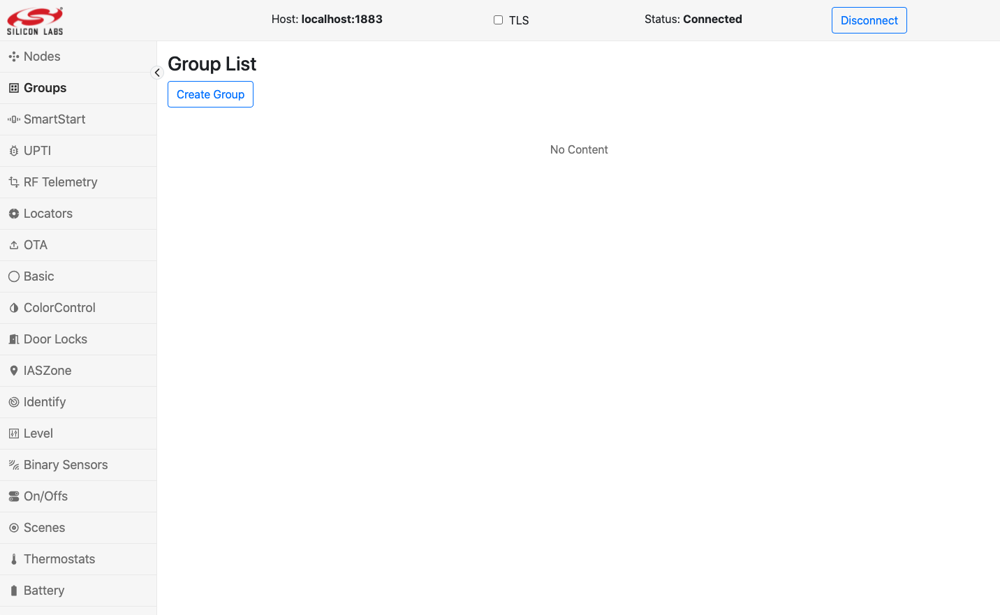
Create Group
Groups are created by pressing the Create Group button. The following image shows how to create a group with four binary switches.

After clicking Save, the groups page will look like following:
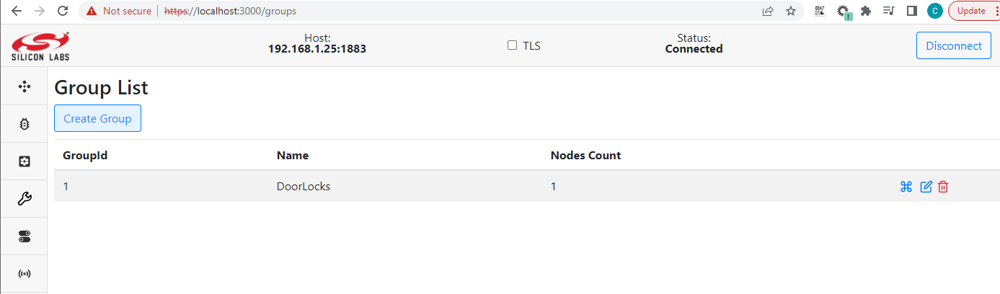
Sending Command to Group
Click the Run Command button to open the Send Group Command pop-up, which looks like following.

This enables selecting the command you want to send to the group. Clicking Send will issue the command. In the above example, it will turn all the binary switches in the group off.
Name and Location
The Dev GUI allows the user to set name and location for each device and help recognize them. The following image shows the dialog when user clicks the corresponding name and location column.
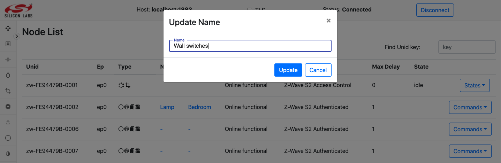
After clicking Update, the page will look like this.
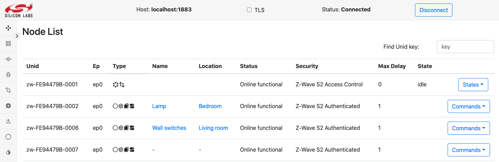